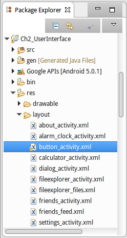
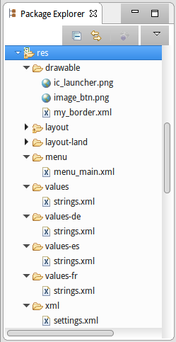
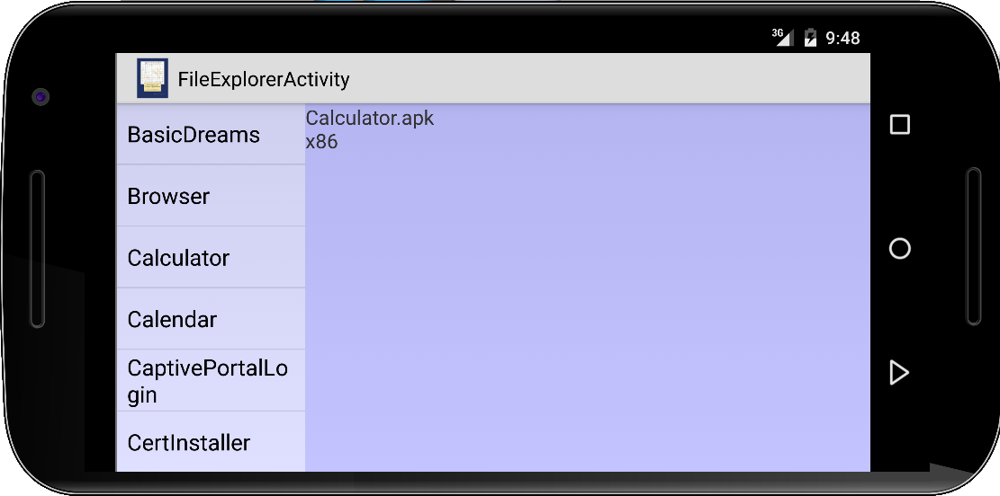

User Interface
Das zentrale Element fast jeder mobilen Anwendung ist das User Interface. Wenn wir uns an Swing erinnern, dann gab es dort z.B. einen JLabel, JButton, JTextField, JCheckBox, oder JRadioButton. In Android heißen die jetzt TextView, Button, EditText, CheckBox oder RadioButton. Auch Layouts gibt es in Android, und natürlich heißen auch die anders, aber was die Funktionalität angeht, sind sie sehr ähnlich. Was anders ist in Android ist die ungewöhnlich große Anzahl verschiedener Gerätegrößen. Auf der einen Seite gibt es Geräte mit einer Auflösung von 320x240 Pixel, auf der anderen gibt es aber auch welche mit einer 4K Auflösung. Um das unter einen Hut zu bringen hat man sich etwas besonderes einfallen lassen: die XML Layout Dateien.
.
ButtonActivity
Betrachten wir unsere ButtonActivity aus dem ersten Kapitel. Jetzt allerdings wollen wir das User Interface in einer XML Layout Datei button_activity.xml definieren:
<LinearLayout xmlns:android="http://schemas.android.com/apk/res/android" xmlns:tools="http://schemas.android.com/tools" android:layout_width="match_parent" android:layout_height="match_parent" android:background="#200000ff" android:orientation="vertical" > <Button android:id="@+id/button" android:layout_width="wrap_content" android:layout_height="wrap_content" android:fontFamily="sans-serif" android:text="Click me!" android:textAllCaps="false" /> </LinearLayout>
Wir erkennen unser LinearLayout wieder und auch unseren "Click me!" Knopf. Die Widgets selbst werden als XML Elemente dargestellt, die Eigenschaften der jeweiligen Widgets werden über XML Attribute festgelegt. Also für jedes XML Element gibt es eine entsprechende Klasse, und für jedes XML Attribut eine entsprechende Methode. Die Verschachtelung, also welche Widgets hierarchisch zu welchen anderen gehören, wird durch die XML Verschachtelung nachempfunden.
Nun müssen wir dieses XML Layout mit unserem Code verbinden:
public class ButtonActivity extends Activity {
@Override
public void onCreate(Bundle savedInstanceState) {
super.onCreate(savedInstanceState);
setContentView(R.layout.button_activity);
Button btn = (Button) findViewById(R.id.button);
btn.setOnClickListener(new OnClickListener() {
@Override
public void onClick(View v) {
Toast.makeText(v.getContext(),
"Button was clicked!",
Toast.LENGTH_LONG).show();
}
});
}
}
Zunächst sagen wir mit setContentView(R.layout.button_activity), dass der ContentView (also die UI) in der Datei button_activity.xml definiert ist. Dann benötigen wir eine Referenz auf unseren Button, und das macht die findViewById() Methode: die sucht nach einem View namens "id.button". Den haben wir aber ja oben in der XML Datei mit dem Attribute "@+id/button" festgelegt. D.h. über das id-Attribut können wir aus unserem Code heraus auf die Elemente in der Layout Datei zugreifen.
Generell führt die Auslagerung der UI in eine XML Layoutdatei zu viel schlankerem Code. Ausserdem erlaubt es eine einfache Internationalisierung (i18n) wie wir gleich noch sehen werden.
.
Resources und R.java
Die XML Layout Datei ist ein Beispiel für eine Resource. In der Android Entwicklung wird sehr viel über Resourcen erledigt, ein schönes Beispiel für gutes Software Engineering. Alle Resourcen finden sich im Verzeichnis /res/ in unserem Android Projekt. Dort finden wir in einem Unterverzeichnis /layout/ alle XML Layout Dateien.
Wir haben mithilfe der Layout Datei eine Trennung von grafischer Benutzeroberfläche und Code erreicht. Diese Trennung von grafischer Benutzeroberfläche und Code hat mehrere Vorteile: wir können die Anordnung der UI Widgets ändern, ohne neuen Code schreiben zu müssen. Wir können verschiedene UIs für verschiedene Gerätegrößen und Formen haben (z.B. Telefone oder Tablets), ohne neuen Code schreiben zu müssen. Und Designer und Entwickler können gleichzeitig arbeiten ohne aufeinander warten zu müssen.
.
Resourcen beinhalten aber nicht nur Layout Dateien. Die wichtigsten Resourcen die man im Verzeichnis /res/ findet sind
- drawables: hier finden sich u.a. Icons und Bilddateien,
- layout: enthält XML Dateien, die UIs beschreiben,
- menu: enthält XML Dateien, die Menus beschreiben,
- values: enthält vor allem die strings.xml Datei,
- xml: enthält XML Dateien, z.B. für eine SettingsActivity.
Aus all diesen Resourcen erzeugt ein Precompiler (aapt) die Datei R.java: die befindet sich im Verzeichnis /gen/ (für generated files) und sieht in etwa so aus:
/* AUTO-GENERATED FILE. DO NOT MODIFY.
*
* This class was automatically generated by the
* aapt tool from the resource data it found. It
* should not be modified by hand.
*/
package de.variationenzumthema.android.ch2;
public final class R {
public static final class drawable {
public static final int ic_launcher=0x7f020000;
public static final int image_btn=0x7f020001;
public static final int my_border=0x7f020002;
}
public static final class id {
public static final int about_content=0x7f080000;
public static final int textView=0x7f080001;
public static final int button=0x7f080002;
public static final int editText=0x7f080003;
public static final int linearLayout1=0x7f080004;
}
public static final class layout {
public static final int about_activity=0x7f030000;
public static final int alarm_clock_activity=0x7f030001;
public static final int button_activity=0x7f030002;
public static final int calculator_activity=0x7f030003;
public static final int dialog_activity=0x7f030004;
}
public static final class menu {
public static final int menu_main=0x7f070000;
}
public static final class string {
public static final int app_name=0x7f050000;
public static final int hello=0x7f050001;
public static final int action_settings=0x7f050002;
public static final int set_alarm=0x7f050003;
}
public static final class xml {
public static final int settings=0x7f040000;
}
}
Wir sehen zu jedem Unterverzeichnis in /res/ gibt es eine separate lokale Klasse, und zusätzlich gibt es die Klasse id, die alle irgendwo mit
android:id="@+id/..."
definierten Ids zusammenfasst. Jeder Resource und Id wird eine eindeutige hexadezimale Konstante zugewiesen, die etwas wie eine Adresse aussieht aber keine ist. Im Code werden diese Konstanten dann referenziert, z.B.:
setContentView(R.layout.button_activity); Button btn = (Button) findViewById(R.id.button);
und dabei ist R die generierte Klasse R aus der Datei R.java.
.
Dialog
Weil wir gerade dabei sind: nicht selten benötigen wir von unseren Nutzern eine Entscheidung, z.B. bei TicTacToe ist die Frage ob der Mensch oder der Computer den ersten Zug machen soll. Für solche einfachen Abfragen verwenden wir Dialoge. Diese erstellt man am einfachsten mit dem AlertDialog.Builder:
public class DialogActivity extends Activity {
...
private String[] who_starts = { "Computer", "Human" };
private void openNewGameDialog() {
new AlertDialog.Builder(this).setTitle("Who should start?")
.setItems(who_starts, new DialogInterface.OnClickListener() {
@Override
public void onClick(DialogInterface dialog, int which) {
Toast.makeText(((Dialog) dialog).getContext(),
"Let’s start the game, " + which + " will start.",
Toast.LENGTH_LONG).show();
}
}).show();
}
}
In dem Array who_starts legen wir fest welche Optionen angezeigt werden sollen. Über den Parameter which wird uns dann mitgeteilt welche Auswahl unser Nutzer getroffen hat.
.
About
Ein anderes Beispiel wie einem die Layout-Datei das Leben vereinfachen kann ist die AboutActivity. Es geht darum dem Nutzer ein kurzes Feedback oder Hilfe zu geben. Die UI wird dabei in der XML Datei festgelegt:
<ScrollView xmlns:android="http://schemas.android.com/apk/res/android"
android:layout_width="fill_parent"
android:layout_height="fill_parent"
android:background="#200000ff"
android:padding="10dip" >
<TextView
android:id="@+id/about_content"
android:layout_width="wrap_content"
android:layout_height="wrap_content"
android:text="TicTacToe is a pencil-and-paper game for two
players, X and O, who take turns marking the spaces in
a 3×3 grid. The X player usually goes first. The player
who succeeds in placing three respective marks in a
horizontal, vertical, or diagonal row wins the game." />
</ScrollView>
Wir sehen hier das erste Mal den ScrollView, der, falls der Platz für den Text nicht ausreicht, das Scrollen ermöglicht. Wir werden den später noch häufiger verwenden.
Die Activity selbst ist nur vier Zeilen lang:
public class AboutActivity extends Activity {
@Override
public void onCreate(Bundle savedInstanceState) {
super.onCreate(savedInstanceState);
setContentView(R.layout.about_activity);
}
}
Hätten wir das Gleiche mit Code versucht, wäre das viel häßlicher geworden.
.
Menu
Wenn wir ein Menu zu unserer Activity hinzufügen wollen, geht das auch wieder am einfachsten über eine XML Datei. In diesem Fall definieren wir eine Datei namens "menu_main.xml" im Verzeichnis /res/menu/ mit folgendem Inhalt:
<menu xmlns:android="http://schemas.android.com/apk/res/android" > <item android:id="@+id/about" android:alphabeticShortcut="a" android:title="About"/> <item android:id="@+id/calculator" android:alphabeticShortcut="c" android:title="Calculator"/> </menu>
Der Inhalt erklärt sich von selbst. Die dazu gehörige Activity ist wieder angenehm kurz:
public class MenuActivity extends Activity {
@Override
public boolean onCreateOptionsMenu(Menu menu) {
super.onCreateOptionsMenu(menu);
MenuInflater inflater = getMenuInflater();
inflater.inflate(R.menu.menu_main, menu);
return true;
}
@Override
public boolean onOptionsItemSelected(MenuItem item) {
switch (item.getItemId()) {
case R.id.about:
startActivity(new Intent(this, AboutActivity.class));
return true;
case R.id.calculator:
startActivity(new Intent(this, CalculatorActivity.class));
return true;
}
return false;
}
}
Die Verknüpfung zwischen den beiden wird wieder über die generierte Klasse R hergestellt.
.
BorderLayout
Kommen wir kurz auf die Layouts in Android zu sprechen. Die wichtigsten sind die folgenden fünf:
- LinearLayout
- RelativeLayout
- GridLayout
- FrameLayout
- TableLayout
Den ersten haben wir schon kennengelernt. Der zweite, der sogenannte RelativeLayout ist sehr mächtig, allerdings nicht ganz einfach. Deswegen hier ein Beispiel wie man das aus Swing bekannte BorderLayout mittels des RelativeLayout nachbilden kann:
<RelativeLayout xmlns:android="http://schemas.android.com/apk/res/android" android:layout_width="match_parent" android:layout_height="match_parent" > <TextView android:id="@+id/north" android:layout_width="match_parent" android:layout_height="wrap_content" android:layout_alignParentTop="true" android:background="#200000ff" android:gravity="center_horizontal" android:text="North" android:textAppearance="@android:style/TextAppearance.Large" /> <TextView android:id="@+id/south" android:layout_width="match_parent" android:layout_height="wrap_content" android:layout_alignParentBottom="true" android:background="#200000ff" android:gravity="center_horizontal" android:text="South" android:textAppearance="@android:style/TextAppearance.Large" /> <TextView android:id="@+id/west" android:layout_width="wrap_content" android:layout_height="match_parent" android:layout_above="@id/south" android:layout_alignParentLeft="true" android:layout_below="@id/north" android:gravity="center_vertical" android:text="West" android:textAppearance="@android:style/TextAppearance.Large" /> <TextView android:id="@+id/east" android:layout_width="wrap_content" android:layout_height="match_parent" android:layout_above="@id/south" android:layout_alignParentRight="true" android:layout_below="@id/north" android:gravity="center_vertical" android:text="East" android:textAppearance="@android:style/TextAppearance.Large" /> <TextView android:layout_width="match_parent" android:layout_height="match_parent" android:layout_above="@id/south" android:layout_below="@id/north" android:layout_toLeftOf="@id/east" android:layout_toRightOf="@id/west" android:background="#100000ff" android:gravity="center" android:text="Center" android:textAppearance="@android:style/TextAppearance.Large" /> </RelativeLayout>
Die Elemente definieren ihre Position relativ zueinander über die Ids. Die dazugehörige Activity macht eigentlich gar nichts.
public class BorderLayoutActivity extends Activity {
@Override
public void onCreate(Bundle savedInstanceState) {
super.onCreate(savedInstanceState);
setContentView(R.layout.border_layout_activity);
}
}
Den GridLayout werden wir im nächsten Beispiel verwenden, der FrameLayout muss noch bis zu den Fragments warten. Der TableLayout (mein Lieblingslayout) kommt im sechsten Kapitel dran (AllAccelGyro).
.
Calculator
In diesem Beispiel wollen wir drei Dinge sehen: zunächst natürlich die Verwendung des GridLayout. Dann geht es aber auch darum zu zeigen, dass für manche Sachen die XML Layout Datei besser geeignet ist, andere Dinge aber besser programmatisch gelöst werden. Und schließlich, und das werden wir noch öfter in diesem Buch sehen, war das zweite Semester nicht ganz umsonst.
Wir definieren zunächst das generelle Layout der Anwendung wieder über die XML Datei:
<LinearLayout xmlns:android="http://schemas.android.com/apk/res/android" android:id="@+id/linearLayout1" android:layout_width="fill_parent" android:layout_height="fill_parent" android:background="#200000ff" android:orientation="vertical" android:padding="0dip" > <TextView android:id="@+id/textView2" android:layout_width="match_parent" android:layout_height="wrap_content" android:layout_marginBottom="5dip" android:layout_marginLeft="5dip" android:layout_marginRight="5dip" android:layout_marginTop="5dip" android:background="#ffe0e0e0" android:gravity="right" android:text="0" android:textSize="32dp" /> <GridLayout android:id="@+id/gridLayout1" android:layout_width="fill_parent" android:layout_height="fill_parent" > </GridLayout> </LinearLayout>
LinearLayout und TextView sind damit fertig definiert. Allerdings der GridLayout ist noch nicht ganz fertig, da fehlt noch der Inhalt, die Knöpfe. Würden wir diese in der XML Datei definieren, wäre das sehr viel Copy-und-Paste. Besser ist es diese dynamisch zu generieren:
public class CalculatorActivity extends Activity implements View.OnClickListener {
private final int NR_OF_COLUMNS = 4;
private String[] btnLabels = {
"7","8","9","/",
"4","5","6","*",
"1","2","3","-",
"(","0",")","+",
"C","DEL",".","="};
private TextView tv;
@Override
protected void onCreate(Bundle savedInstanceState) {
super.onCreate(savedInstanceState);
setContentView(R.layout.calculator_activity);
getScreenDimensions();
tv = (TextView) findViewById(R.id.textView2);
GridLayout gl = (GridLayout) findViewById(R.id.gridLayout1);
gl.removeAllViews();
gl.setColumnCount(NR_OF_COLUMNS);
gl.setRowCount(5);
Button[] btns = new Button[btnLabels.length];
for (int i = 0; i < btnLabels.length; i++) {
btns[i] = new Button(this);
btns[i].setText(btnLabels[i]);
btns[i].setLayoutParams(getLayoutParams(width, i));
btns[i].setOnClickListener(this);
gl.addView(btns[i]);
}
}
...
}
Wir holen uns also eine Referenz auf das Gridlayout aus der XML Datei, setzen die Spalten- und Zeilenzahl, und fügen dann die Buttons ein. Jedem Button müssen wir noch ordentliche Layoutparameter verpassen, das machen wir über die Methode getLayoutParams():
private GridLayout.LayoutParams getLayoutParams(int width, int i) {
GridLayout.LayoutParams param = new GridLayout.LayoutParams();
// param.height = LayoutParams.WRAP_CONTENT;
// param.width = LayoutParams.WRAP_CONTENT;
// param.rightMargin = 5;
// param.topMargin = 5;
param.width = width / NR_OF_COLUMNS;
param.setGravity(Gravity.CENTER);
param.columnSpec = GridLayout.spec(i % NR_OF_COLUMNS);
param.rowSpec = GridLayout.spec(i / NR_OF_COLUMNS);
return param;
}
Die Breite die unser GridLayout zur Verfügung hat, erhalten wir mit der getScreenDimensions() Methode:
private void getScreenDimensions() {
Display display = getWindowManager().getDefaultDisplay();
Point size = new Point();
display.getSize(size);
width = size.x;
height = size.y;
}
Fehlt nur noch die onClick() Methode: wenn eine Ziffer, ein Operator oder eine Klammer eingegeben wird, dann soll die im Display ausgegeben werden, bei einem 'C' soll das Display gelöscht werden, bei dem Drücken von 'DEL', soll das letzte Zeichen gelöscht werden, und beim Drücken des '=' Zeichens soll die Eingabe ausgewertet werden.
@Override
public void onClick(View v) {
String lbl = ((Button) v).getText().toString();
if ("0123456789()+-*/".contains(lbl)) {
tv.append(lbl);
} else if (lbl.equals("C")) {
tv.setText("");
} else if (lbl.equals("=")) {
String infix = tv.getText().toString();
String postfix = convertFromInfixToPostfix(infix);
Log.i(TAG, postfix);
int result = evaluate(postfix);
tv.setText("" + result);
} else if (lbl.equals("DEL")) {
String txt = tv.getText().toString();
tv.setText(txt.substring(0, txt.length() - 1));
}
}
Die Methoden convertFromInfixToPostfix() und evaluate() kennen wir noch aus dem vierten Lab des zweiten Semester.
.
ScreenDimensions
Die Methode getScreenDimensions() oben ist nicht ganz korrekt. Denn der uns zur Verfügung stehende Screen Real Estate hängt zum einen natürlich von der Auflösung unseres Bildschirms ab. Aber auch davon ob Statusbar, Actionbar und/oder Navigationbar sichtbar sind.
Statusbar, Actionbar und/oder Navigationbar
Die Auflösung unseres Bildschirms erhalten wir mit der getRealSize() Methode des Displays:
...
String msg = "";
Display display = getWindowManager().getDefaultDisplay();
Point size = new Point();
display.getRealSize(size);
msg += "Real size: w=" + size.x + ", h=" + size.y + "\n";
...
Je nachdem ob Statusbar, Actionbar und/oder Navigationbar sichtbar sind, müssen wir deren Höhe noch von der Höhe des Displays abziehen:
...
// status bar
int statusBarHeight = 0;
int resourceId = getResources().getIdentifier("status_bar_height", "dimen", "android");
if (resourceId > 0) {
statusBarHeight = getResources().getDimensionPixelSize(resourceId);
}
msg += "Status Bar: h=" + statusBarHeight + "\n";
// action bar
int actionBarHeight = 0;
final TypedArray styledAttributes = this.getTheme()
.obtainStyledAttributes(new int[] { android.R.attr.actionBarSize });
actionBarHeight = (int) styledAttributes.getDimension(0, 0);
styledAttributes.recycle();
msg += "Action Bar: h=" + actionBarHeight + "\n";
// navigation bar
int navigationBarHeight = 0;
resourceId = getResources().getIdentifier("navigation_bar_height", "dimen", "android");
if (resourceId > 0) {
navigationBarHeight = getResources().getDimensionPixelSize(resourceId);
}
msg += "Navigation Bar: h=" + navigationBarHeight;
...
Befindet sich unsere App allerdings im Landscape Modus, dann müssen wir die Navigationbar-Höhe von der Breite des Displays abziehen.
.
AlarmClock (i18n)
Wir haben inzwischen schon mehrere Vorzüge der Trennung von UI und Code mit Hilfe von XML Dateien gesehen. Ein weiterer ist die Internationalisierung (i18n), also das Anpassen einer Anwendung an verschiedene Sprachen. Die Activity macht wieder mal gar nichts:
public class AlarmClockActivity extends Activity {
@Override
protected void onCreate(Bundle savedInstanceState) {
super.onCreate(savedInstanceState);
setContentView(R.layout.alarm_clock_activity);
}
}
Auch das Layout ist nichts besonderes,
<RelativeLayout xmlns:android="http://schemas.android.com/apk/res/android"
xmlns:tools="http://schemas.android.com/tools"
... >
<TextView
android:id="@+id/textView"
...
android:text="0:00:00" />
<Button
android:id="@+id/button"
...
android:text="@string/set_alarm"
android:textAllCaps="false" />
<EditText
android:id="@+id/editText"
...
android:inputType="number"
android:textSize="24dp" />
</RelativeLayout>
.
außer, dass der Text des Buttons, "@string/set_alarm", eine Referenz auf einen Eintrag in der Datei /res/values/string.xml ist:
<resources>
<string name="app_name">Alarm</string>
<string name="set_alarm">Set Alarm</string>
<string name="action_settings">Settings</string>
</resources>
Wenn wir jetzt unsere Activity in andere Sprachen übersetzen wollen, müssen wir lediglich diese eine Datei übersetzen, für jede unterstützte Sprache eine zusätzliche Datei. Gespeichert werden diese Dateien in unterschiedlichen Verzeichnissen, z.B., die deutsche Übersetzung in dem Verzeichnis /res/values-de/:
<resources> <string name="app_name">Wecker</string> <string name="set_alarm">Wecker Stellen</string> <string name="action_settings">Einstellungen</string> </resources>
An den Systemeinstellungen des Handys erkennt Android welche Sprache der Nutzer eingestellt hat und verwendet diese dann automatisch. Wir müssen gar nichts tun. Wenn wir das testen wollen, müssen wir lediglich in den Systemeinstellungen des Handys eine andere Sprache einstellen.
.
.
Quotes
Wenn wir unsere bisherigen Anwendungen mal auf einem Tablet laufen lassen, werden wir schnell feststellen, dass die meisten etwas komisch aussehen. Die verschwenden so viel Platz. Um trotz größerer Bildschirme immer noch ästhetisch einigermaßen ansprechende Apps schreiben zu können, gibt es die Fragments.
Auf einem Tablet kann ich mehr Information anzeigen als auf dem kleinen Bildschirm eines Telefons. Die Idee ist einfach: nimm zwei der kleinen Telefonbildschirme und zeige die auf dem Tablet nebeneinander an.
Fragments
Als Anwendung wollen wir einen kleinen Zitatebrowser schreiben. Auf dem Handy soll zunächst eine Liste mit Berühmtheiten erscheinen, und wenn man einen dieser Leute anklickt, sollen auf dem nächsten Schirm ein paar Zitate angezeigt werden. Auf dem Tablet hingegen sollen die Berühmtheiten links und die Zitate rechts nebeneinander erscheinen.
Wir beginnen mit den Layouts: die Activity agiert in diesem Beispiel lediglich als Container für die Fragments. Dabei müssen wir zwei Fälle unterscheiden. Für das Tablet definieren wir das Layout in der Datei quotes_activity.xml im Verzeichnis /res/layout-land/ (land steht für Landscape):
<LinearLayout xmlns:android="http://schemas.android.com/apk/res/android" android:id="@+id/frags" android:layout_width="match_parent" android:layout_height="match_parent" android:background="#200000ff" android:baselineAligned="false" android:orientation="horizontal" > <fragment android:id="@+id/names_fragment" android:layout_width="0dp" android:layout_height="match_parent" android:layout_weight="1" class="variationenzumthema_ch2.QuotesNamesFragment" /> <fragment android:id="@+id/quotes_fragment" android:layout_width="0dp" android:layout_height="match_parent" android:layout_weight="3" class="variationenzumthema_ch2.QuotesQuotesFragment" /> </LinearLayout>
.
Für das Telefon, definieren wir das Layout auch in einer Datei quotes_activity.xml, die ist aber im Verzeichnis /res/layout/ (also da wo es normalerweise immer ist):
<FrameLayout xmlns:android="http://schemas.android.com/apk/res/android"
android:id="@+id/fragment_container"
android:layout_width="match_parent"
android:layout_height="match_parent"
android:background="#200000ff" />
Wir definieren hier nicht viel, weil wie wir weiter unten sehen werden, auf dem Telefon alles von Hand gemacht werden muss. Wir haben also zwei verschiedene Layoutdateien, eine für das Tablet und eine für das Telefon.
Kommen wir zu den Fragmenten: Für das erste Fragment gibt es keine Layoutdatei, da es sich um ein ListFragment handelt und dieses gar nicht verändert wird.
Die Layoutdatei für das zweite Fragment (quotes_quotes.xml), verwendet einen ScrollView, wie wir ihn von der AboutActivity her kennen, und einen TextView für die Zitate:
<ScrollView xmlns:android="http://schemas.android.com/apk/res/android" android:layout_width="match_parent" android:layout_height="match_parent" android:background="#200000ff" > <TextView android:id="@+id/quotes_view" android:layout_width="match_parent" android:layout_height="wrap_content" android:text="Select a name to see quotes!" /> </ScrollView>
Was den Code angeht, beginnen wir mit der einfachsten der drei Klassen, dem QuotesQuotesFragment:
public class QuotesQuotesFragment extends Fragment {
private String[] quotes;
@Override
public View onCreateView(LayoutInflater inflater,
ViewGroup container,
Bundle savedInstanceState) {
return inflater.inflate(R.layout.quotes_quotes, container, false);
}
@Override
public void onActivityCreated(Bundle savedInstanceState) {
super.onActivityCreated(savedInstanceState);
if (quotes == null) {
quotes = getResources().getStringArray(R.array.Quotes);
}
}
public void updateFeedDisplay(int position) {
TextView tv = (TextView) getView().findViewById(R.id.quotes_view);
tv.setText(quotes[position]);
}
}
In der onCreateView() wird die UI aus der XML Layoutdatei geladen. In der onActivityCreated() füllen wir unser Zitate-Array mit den Zitaten aus der strings.xml Datei:
<resources> <string-array name="Names"> <item>Bach</item> <item>Einstein</item> <item>Faust</item> <item>Goethe</item> </string-array> <string-array name="Quotes"> <item>Alles, was man tun muß, ist die richtige Taste ...</item> <item>Das Resultat ist wichtig, nicht die Mathematik, ...</item> <item>So soll ich denn mit saurem Schweiss \nEuch lehren, ...</item> <item>Wer fremde Sprachen nicht kennt, weiss nichts von ...</item> </string-array> </resources>
Schließlich ist da noch die updateFeedDisplay() Methode: hier wird uns mitgeteilt welche der Zitate wir anzeigen sollen. Mitgeteilt wird uns das von der QuotesActivity.
Als nächstes sehen wir uns das QuotesNamesFragment für die Liste der Berühmtheiten an. Wir haben ein Stringarray für die Namen, die wir auch wieder aus der strings.xml Datei beziehen. Zusätzlich verknüpfen wir noch diese Namen mit der Liste unseres Fragments (wir sind ja ein ListFragment!):
public class QuotesNamesFragment extends ListFragment {
private String[] names;
@Override
public void onCreate(Bundle savedInstanceState) {
super.onCreate(savedInstanceState);
names = getResources().getStringArray(R.array.Names);
setListAdapter(
new ArrayAdapter<String>(getActivity(),
android.R.layout.simple_list_item_activated_1,
names)
);
}
@Override
public void onListItemClick(ListView l, View view, int position, long id) {
...
}
...
}
Falls unser Nutzer jetzt auf einen der Namen klickt wird die onListItemClick() Methode aufgerufen, wo wir dann irgendetwas machen könnten.
.
Wenn das Fragment jetzt ganz für sich alleine leben würde, wären wir fertig. Aber wir wollen ja, dass die Zitate zu den entsprechenden Berühmtheiten im QuotesQuotesFragment angezeigt werden. Leider können wir mit dem QuotesQuotesFragment nicht direkt sprechen, da wir ja gar nicht wissen ob es exisitiert. Auf dem Tablet schon, auf dem Telefon dagegen nicht.
Deswegen müssen wir den Umweg über die Activity machen, die weiß nämlich Bescheid. Wir müssen also der Activity Bescheid geben können. Das heißt aber nichts anderes als dass wir eine Methode in der Activity aufrufen. Wie macht man sowas softwaretechnisch sauber? Über einen Callback.
Callbacks sind in der Regel Methoden, in unserem Fall die onItemSelected() Methode der QuotesActivity. Die rufen wir auf, wenn der Nutzer auf einen der Namen klickt. Dazu benötigen wir aber eine Referenz auf die Activity. Die erhalten wir in der onAttach() Methode die aufgerufen wird, wenn unser Fragment an die Activty angefügt (attached) wird.
public class QuotesNamesFragment extends ListFragment {
...
private SelectionListener callback;
@Override
public void onAttach(Activity activity) {
super.onAttach(activity);
callback = (SelectionListener) activity;
}
@Override
public void onListItemClick(ListView l, View view, int position, long id) {
callback.onItemSelected(position);
}
}
Wie stellen wir sicher, dass es in der QuotesActivity auch wirklich die Methode onItemSelected() gibt? Das machen wir in dem wir ein Interface definieren, z.B.
public interface SelectionListener {
public void onItemSelected(int position);
}
Es könnte auch FritzListener heißen, der Name ist egal, wichtig ist, dass es die Methode onItemSelected() fordert. Das mit dem Callback muss man nicht machen, aber es ist sauberes Softwareengineering.
Nach all der Vorarbeit kommen wir zum Herzen unserer Anwendung der QuotesActivity. Wie wir gesehen haben, muss sie das SelectionListener Interface und damit die Methode onItemSelected() implementieren.
public class QuotesActivity extends Activity implements SelectionListener { private QuotesNamesFragment namesFragment; private QuotesQuotesFragment quotesFragment; @Override protected void onCreate(Bundle savedInstanceState) { super.onCreate(savedInstanceState); setContentView(R.layout.quotes_activity); if (isInSinglePaneMode()) { quotesFragment = new QuotesQuotesFragment(); namesFragment = new QuotesNamesFragment(); FragmentManager mFragmentManager = getFragmentManager(); FragmentTransaction fragmentTransaction = mFragmentManager.beginTransaction(); fragmentTransaction.replace(R.id.fragment_container, namesFragment); fragmentTransaction.commit(); } else { quotesFragment = (QuotesQuotesFragment) getFragmentManager().findFragmentById(R.id.quotes_fragment); } } private boolean isInSinglePaneMode() { return findViewById(R.id.fragment_container) != null; } public void onItemSelected(int position) { if (isInSinglePaneMode()) { FragmentTransaction fragmentTransaction = getFragmentManager().beginTransaction(); fragmentTransaction.replace(R.id.fragment_container, quotesFragment); fragmentTransaction.addToBackStack(null); fragmentTransaction.commit(); getFragmentManager().executePendingTransactions(); } quotesFragment.updateQuotesDisplay(position); } }
Die QuotesActivity ist sozusagen der Manager: über die Methode isInSinglePaneMode() stellt sie fest, ob sie auf einem Telefon (true) oder einem Tablet (false) läuft.
Tablet is easy: es werden immer beide Fragments angezeigt. Das führt in der onCreate() Methode dazu, dass die beiden Fragmente automatisch erzeugt werden (sind ja in der quotes_activity.xml definiert). Wir benötigen lediglich noch eine Referenz auf das QuotesQuotesFragment.
Beim Telefon ist es etwas komplizierter: da ist ja in der Layoutdatei quotes_activity.xml gar nix definiert. Deswegen legen wir erst einmal beide Fragmente von Hand an, und sagen dem FragmentManager, dass er anstelle von uns (replace) doch das QuotesNamesFragment anzeigen soll. D.h. der Nutzer sieht erst einmal nur die Namen.
Wählt der Nutzer jetzt einen der Namen aus, wird die onItemSelected() Methode aufgerufen. Beim Tablet wieder easy: wir zeigen einfach die Zitate im QuotesQuotesFragment an. Beim Telefon müssen wir das QuotesNamesFragment durch das QuotesQuotesFragment ersetzen. Das geht wieder über den FragmentManager. Wenn jetzt das QuotesQuotesFragment sichtbar ist, können wir dort dann, wie beim Tablet, die richtigen Zitate anzeigen. Das war's.
Nachdem wir gesehen haben, dass das mit den Fragmenten etwas komplizierter ist, verstehen wir vielleicht warum wir im Rest des Buchs selbige nicht so häufig verwenden werden.
Übrigens kann man das Telefon auch drehen, dann geht es in den Landscape-Modus.
.
Tabs
Eine Möglichkeit den begrenzten Platz auf dem Telefon etwas größer zu machen sind Fragments. Eine andere sind Tabs. Die sind um einiges einfacher. Hier gibt es eine Activity und eine Layoutdatei. Wir sehen uns zunächst das Layout an. Die ist vielleicht etwas lang, aber nicht weiter kompliziert:
<LinearLayout xmlns:android="http://schemas.android.com/apk/res/android" android:layout_width="match_parent" android:layout_height="match_parent" android:background="#200000ff" android:orientation="vertical" > <TabHost android:id="@+id/tabHost" android:layout_width="match_parent" android:layout_height="match_parent" android:layout_alignParentTop="true" android:layout_centerHorizontal="true" > <LinearLayout android:layout_width="match_parent" android:layout_height="match_parent" android:orientation="vertical" > <HorizontalScrollView android:layout_width="fill_parent" android:layout_height="wrap_content" android:fillViewport="true" android:scrollbars="none" > <TabWidget android:id="@android:id/tabs" android:layout_width="wrap_content" android:layout_height="wrap_content" > </TabWidget> </HorizontalScrollView> <FrameLayout android:id="@android:id/tabcontent" android:layout_width="match_parent" android:layout_height="match_parent" > <!-- Tab-0 --> <LinearLayout android:id="@+id/tab0" android:layout_width="match_parent" android:layout_height="match_parent" android:background="#100000ff" android:orientation="vertical" > <TextView android:layout_width="match_parent" android:layout_height="match_parent" android:text="Tab 0" /> </LinearLayout> <!-- Tab-1 --> <LinearLayout android:id="@+id/tab1" android:layout_width="match_parent" android:layout_height="match_parent" android:background="#1000ff00" android:orientation="vertical" > <TextView android:layout_width="match_parent" android:layout_height="match_parent" android:text="Tab 1" /> </LinearLayout> </FrameLayout> </LinearLayout> </TabHost> </LinearLayout>
Der TabHost gibt den ganzen Rahmen vor, alles was darin definiert wird gehört zu den Tabs. Das nächste sind die TabWidgets: das sind die Reiter mit denen man die verschiedenen Tabs auswählen kann. Die Tabs selbst sind wieder, nacheinander, in einem FrameLayout definiert.
Die Activity ist auch ganz einfach. Zunächst basteln wir die UI automatisch aus der Layoutdatei.
public class TabsActivity extends Activity {
@Override
protected void onCreate(Bundle savedInstanceState) {
super.onCreate(savedInstanceState);
setContentView(R.layout.tabs_activity);
// ui setup
final TabHost host = (TabHost) findViewById(R.id.tabHost);
host.setup();
// Tab 0
TabHost.TabSpec spec = host.newTabSpec("Tab Zero");
spec.setContent(R.id.tab0);
spec.setIndicator("First Tab");
host.addTab(spec);
// Tab 1
spec = host.newTabSpec("Tab One");
spec.setContent(R.id.tab1);
spec.setIndicator("Second Tab");
host.addTab(spec);
host.setOnTabChangedListener(new TabHost.OnTabChangeListener() {
public void onTabChanged(String tabId) {
showToast(host.getCurrentTab());
}
});
}
private void showToast(int currentTab) {
Toast.makeText(this,
"Tab" + currentTab + " was triggered.",
Toast.LENGTH_SHORT).show();
}
}
Danach holen wir uns eine Referenz auf den Tabhost, und fügen einen Tab nach dem anderen zum Host hinzu. Schließlich registrieren wir noch einen OnTabChangeListener, der aufgerufen wird wenn unser Nutzer auf einen der Reiter klickt. Interessant ist vielleicht noch das final vor TabHost: das ist nötig, damit wir in der onTabChanged() Methode darauf zugreifen dürfen.
Wenn wir die Tabs mit den Fragments vergleichen, ist ziemlich eindeutig welcher von beiden einfacher ist.
.
Review
Halten wir noch einmal kurz fest was wir bisher gelernt haben. WIr haben gesehen wie man eine UI in Android über XML Dateien gerätespezifisch festlegen kann. Dabei haben wir auch das erste Mal was über Resourcen und die R.java Datei gehört. Des weiteren haben wir Beispiele für einen Dialog ein Menu gesehen, sowie verschiedene Layouts kennengelernt. Das Thema Internationalisierung (i18n) haben wir angedeutet, und mit Fragmenten habe wir uns etwas ausführlicher beschäftigt. Abschließend haben wir uns noch kurz die Tabs angeschaut.
.
Projekte
In den Projekten in diesem Kapitel werden wir viele alte Bekannte aus dem zweiten Semester treffen. Der Sinn dahinter ist zweifach: zum Einen wollen wir die verschiedenen Android UI Widgets kennenlernen, gleichzeitig aber vielleicht das eine oder andere wieder auffrischen. Ein paar neue Dinge sind aber auch dabei.
.
Lottery
Wir wollen einen kleinen Lottozahlengenerator schreiben. Dabei haben wir die Vorarbeit schon im zweiten Semester geleistet: mithilfe von Zufallszahlen und der Set Datenstruktur ist das ganz einfach. Was uns zu tun bleibt ist die Protierung nach Android. Dazu beginnen wir mit dem User Interface, das wir wieder in einer XML Datei definieren, einen Button und einen TextView:
<LinearLayout xmlns:android="http://schemas.android.com/apk/res/android" xmlns:tools="http://schemas.android.com/tools" android:layout_width="match_parent" android:layout_height="match_parent" android:background="#200000ff" android:orientation="vertical" > <Button android:id="@+id/button" android:layout_width="wrap_content" android:layout_height="wrap_content" android:fontFamily="sans-serif" android:text="Create my lucky numbers" android:textSize="24sp" /> <TextView android:id="@+id/result" android:layout_width="wrap_content" android:layout_height="wrap_content" android:text="" android:textSize="24sp" /> </LinearLayout>
Im Code setzen wir den ContentView, dann holen wir uns eine Referenz auf den TextView und den Button. Wenn der Knopf gedrückt wurde, erzeugen wir die Lottozahlen und zeigen sie um TextView an.
public class LotteryActivity extends Activity {
private TextView result;
@Override
protected void onCreate(Bundle savedInstanceState) {
super.onCreate(savedInstanceState);
setContentView(R.layout.lottery_activity);
result = (TextView) findViewById(R.id.result);
Button btnCreateLuckyNumbers = (Button) findViewById(R.id.button);
btnCreateLuckyNumbers.setOnClickListener(new View.OnClickListener() {
public void onClick(View v) {
String numbers = generateLotteryNumbers();
result.setText("Your lucky numbers are:\n" + numbers);
}
});
}
...
}
Da der TextView result nur in der Methode onCreate() verwendet wird, könnte er auch eine lokale Variable sein, müsste dann aber final sein.
Falls Sie so eine Anwendung im Google Play Store veröffentlichen wollen, sollten Sie unbedingt einen Disclaimer hinzufügen, sonst werden Sie von irgendeinem Dödl verklagt, weil er beim Lotto nix gewonnen hat.
.
Blackjack
Im Blackjack Beispiel geht es darum mal den RelativeLayout auszuprobieren. Wir brauchen vier TextViews und zwei Buttons. Die Buttons sollen nebeneinander, die Views untereinander angeordnet sein, so wie wir es im Screenshot sehen. Im Code holen wir uns wieder die Referenzen auf alle benötigten Widgets und fügen noch OnClickListener zu den Knöpfen hinzu.
public class BlackjackActivity extends Activity {
private List<Integer> cards = new ArrayList<Integer>();
private TextView tvPlayerCards;
private TextView tvDealerCards;
private TextView tvWinOrLoose;
@Override
protected void onCreate(Bundle savedInstanceState) {
super.onCreate(savedInstanceState);
setContentView(R.layout.blackjack_activity);
tvPlayerCards = (TextView) findViewById(R.id.player);
tvDealerCards = (TextView) findViewById(R.id.dealer);
tvWinOrLoose = (TextView) findViewById(R.id.win_or_loose);
Button btnHit = (Button) findViewById(R.id.btn_hit);
btnHit.setOnClickListener(new View.OnClickListener() {
public void onClick(View v) {
cards.add(nextRandomInt(1, 11));
showPlayerCards();
}
});
Button btnStand = (Button) findViewById(R.id.btn_stand);
btnStand.setOnClickListener(new View.OnClickListener() {
public void onClick(View v) {
checkResult();
}
});
// init player cards
cards.add(nextRandomInt(1, 11));
cards.add(nextRandomInt(1, 11));
showPlayerCards();
}
...
}
Die Logik für das Spiel haben wir ja schon im zweiten Semester geschrieben.
.
CreditCard
Kreditkarten verwenden den sogenannten Luhn Algorithmus um festzustellen, ob sich bei der eingegebenen Nummer ein Tippfehler eingeschlichen hat. Wir können das Ganze in eine kleine App zum checken von Kreditkarten verwandeln. Dazu brauchen wir zwei TextView, einen EditText und einen Button:
<LinearLayout xmlns:android="http://schemas.android.com/apk/res/android"
xmlns:tools="http://schemas.android.com/tools"
android:layout_width="match_parent"
android:layout_height="match_parent"
android:background="#200000ff"
android:orientation="vertical" >
<TextView
android:id="@+id/label"
android:layout_width="wrap_content"
android:layout_height="wrap_content"
android:text="Enter a credit card number:"
android:textSize="24sp" />
<EditText
android:id="@+id/editText"
android:layout_width="match_parent"
android:layout_height="wrap_content"
android:inputType="number"
android:textSize="24sp" />
<Button
android:id="@+id/button"
android:layout_width="wrap_content"
android:layout_height="wrap_content"
android:fontFamily="sans-serif"
android:text="Check"
android:textAllCaps="false"
android:textSize="24sp" />
<TextView
android:id="@+id/result"
android:layout_width="wrap_content"
android:layout_height="wrap_content"
android:text=""
android:textSize="24sp" />
</LinearLayout>
Interessant ist hier, dass wir dem EditText über android:inputType="number" sagen können, dass er nur Zahlen akzeptieren soll. Probieren Sie mal ob er auch Gleitkommazahlen akzeptiert.
.
WordGuess
Kommen wir zu Hangman 2.0. Dafür benötigen wir einen TextView, um anzuzeigen welche Buchstaben schon richtig erraten wurden, einen EditText damit der Nutzer raten kann, und einen Button um zu checken ob der Buchstabe im gesuchten Wort ist. Der Code ist auch wieder trivial, zwei neue Dinge können wir aber beim Layout lernen:
<LinearLayout xmlns:android="http://schemas.android.com/apk/res/android"
xmlns:tools="http://schemas.android.com/tools"
android:layout_width="match_parent"
android:layout_height="match_parent"
android:background="#200000ff"
android:orientation="vertical" >
<TextView
android:id="@+id/word_shown"
android:layout_width="match_parent"
android:layout_height="wrap_content"
android:gravity="center"
android:text="mother"
android:textSize="24sp" />
<LinearLayout
android:layout_width="match_parent"
android:layout_height="wrap_content"
android:gravity="center_horizontal"
android:orientation="horizontal" >
<EditText
android:id="@+id/char_entered"
android:layout_width="wrap_content"
android:layout_height="wrap_content"
android:inputType="text"
android:maxLength="1"
android:textSize="24sp" />
<Button
android:id="@+id/btn_check_word"
android:layout_width="wrap_content"
android:layout_height="wrap_content"
android:fontFamily="sans-serif"
android:text="Check"
android:textSize="24sp" />
</LinearLayout>
</LinearLayout>
Zum einen sehen wir wie man LinearLayouts ineinander verschachteln kann, z.B. einen vertikal und den anderen horizontal. Zum anderen sehen wir wie man die Eingabe einer EditText auf ein Zeichen beschränken kann. Im nächsten Kapitel lernen wir wie man denn auch das dazugehörige Galgenmännchen zeichnen kann.
.
FahrenheitToCelsius
Die SeekBar Klasse haben wir bisher noch nicht verwendet. Eine schöne Anwendung ist ein kleiner Umrechner der Fahrenheit in Celsius und umgekehrt umwandelt. Man sieht auch schön wieder wie man mittels der Verschachtelung verschiedener Layouts meist an sein Ziel kommt.
Wir wollen in der ersten Zeile links den Fahrenheit TextView und rechts den Celsius TextView haben, darunter soll dann der SeekBar über die ganze Breite der Activity gehen:
<LinearLayout xmlns:android="http://schemas.android.com/apk/res/android" android:layout_width="match_parent" android:layout_height="match_parent" android:background="#200000ff" android:orientation="vertical" > <RelativeLayout android:layout_width="match_parent" android:layout_height="wrap_content" android:orientation="horizontal" > <TextView android:id="@+id/celsius" android:layout_width="wrap_content" android:layout_height="wrap_content" android:layout_alignParentRight="true" android:layout_alignParentTop="true" android:layout_marginRight="50dp" android:text="37.8°C" android:textSize="24sp" /> <TextView android:id="@+id/fahrenheit" android:layout_width="wrap_content" android:layout_height="wrap_content" android:layout_alignParentLeft="true" android:layout_alignParentTop="true" android:layout_marginLeft="50dp" android:text="100.0°F" android:textSize="24sp" /> </RelativeLayout> <SeekBar android:id="@+id/seekbar" android:layout_width="match_parent" android:layout_height="wrap_content" android:max="100" android:progress="50" /> </LinearLayout>
Damit das Ganze auf Inputs des Nutzers reagiert, müssen wir am SeekBar einen OnSeekBarChangeListener anbringen und dessen onProgressChanged() Methode überschreiben.
public class FahrenheitToCelsiusActivity extends Activity {
private TextView tvFahrenheit;
private TextView tvCelsius;
@Override
public void onCreate(Bundle savedInstanceState) {
super.onCreate(savedInstanceState);
setContentView(R.layout.fahrenheit_to_celsius_activity);
tvFahrenheit = (TextView) findViewById(R.id.fahrenheit);
tvCelsius = (TextView) findViewById(R.id.celsius);
SeekBar seekbar = (SeekBar) findViewById(R.id.seekbar);
seekbar.setOnSeekBarChangeListener(new OnSeekBarChangeListener() {
@Override
public void onStopTrackingTouch(SeekBar seekBar) {
}
@Override
public void onStartTrackingTouch(SeekBar seekBar) {
}
@Override
public void onProgressChanged(SeekBar seekBar, int progress, boolean fromUser) {
double f = convertProgressToFahrenheit(progress);
double c = fahrenheitToCelsius(f);
tvFahrenheit.setText(String.format("%1$,.1f", f) + "°F");
tvCelsius.setText("" + String.format("%1$,.1f", c) + "°C");
}
});
}
private int convertProgressToFahrenheit(int progress) {
return (4 * progress) - 100;
}
private double fahrenheitToCelsius(double f) {
double c = (5.0 / 9.0) * (f - 32.0);
return c;
}
}
Ursprünglich wollte ich eigentlich den NumberPicker für diese Activity verwenden, der funktioniert aber nicht für negative Zahlen! In Indien wäre das vielleicht o.k., nicht aber bei uns.
.
Quiz
Wir wollen eine Anwendung für Multiplechoice Quizes erstellen. Im ersten Semester hatten wir uns dazu schon mal Gedanken gemacht. Zunächst überlegen wir uns den Logikteil der Activity. Die Fragen sollen erst einmal aus einem Stringarray kommen. Später könnten die auch von einem Server im Internet kommen. Wir parsen die Strings und laden die Fragen in eine Liste:
public class QuizActivity extends Activity {
private final String[] QUESTIONS = {
"Correct: 1 + 1 = 2 ?; Yes; No; Maybe",
"What is 2 ^ 2 ?; 2; 4; 8",
"A zebra has stripes?; Yes; No" };
private List<Question> questions;
private int currentQuestion = 0;
@Override
public void onCreate(Bundle savedInstanceState) {
super.onCreate(savedInstanceState);
loadQuestions();
setContentView(createUI());
}
private void loadQuestions() {
questions = new ArrayList<Question>();
for (int i = 0; i < QUESTIONS.length; i++) {
String[] words = QUESTIONS[i].split(";");
Question q = new Question(words);
questions.add(q);
}
}
...
}
Die Klasse Question ist so einfach wie möglich, lässt deswegen aber auch einige Softwareengineeringprinzipien außer Acht:
class Question {
public String question;
public String[] answers;
public Question(String[] words) {
question = words[0];
answers = words;
}
}
Worum es uns eigentlich geht ist die UI. Die Fragen ändern sich nämlich, deswegen muss mindestens dieser Teil der UI dynamisch erzeugt werden:
private LinearLayout createQuestionView(Question q) {
LinearLayout ll2 = new LinearLayout(this);
ll2.setOrientation(LinearLayout.VERTICAL);
TextView tvQuestion = new TextView(this);
tvQuestion.setText(q.question);
tvQuestion.setGravity(Gravity.LEFT);
tvQuestion.setTextSize(24);
ll2.addView(tvQuestion);
RadioGroup rg = new RadioGroup(this);
for (int i = 1; i < q.answers.length; i++) {
RadioButton rb1 = new RadioButton(this);
rb1.setTextSize(24);
rb1.setText(q.answers[i]);
rg.addView(rb1);
}
ll2.addView(rg);
return ll2;
}
Dieses Layout fügen wir dann an entsprechender Stelle in den Rahmen ein. Ob der Teil aus einer XML Datei kommt oder dynamisch erzeugt wird spielt keine Rolle. Wenn man die Erzeugung der UI in eine Methode createUI() auslagert, dann muss der Button der zur nächsten Frage führt, folgenden OnClickListener haben:
...
btnNext.setOnClickListener(new OnClickListener() {
@Override
public void onClick(View v) {
Toast.makeText(v.getContext(), "Next!", Toast.LENGTH_SHORT).show();
if (currentQuestion < questions.size() - 1) {
currentQuestion++;
setContentView(createUI());
}
}
});
...
und ähnlich für den "Zurück" Knopf.
.
Terminal
Wir haben ja bereits am Anfang dieses Buchs angedeutet, dass es sich bei Android eigentlich um ein Linux Betriebssystem handelt. Das wollen wir jetzt auch unter Beweis stellen indem wir eine einfach Terminal Anwendung schreiben.
Die UI besteht aus drei Widgets, einem AutoCompleteTextView, einem Button und einem TextView mit Scrollbars.
<LinearLayout xmlns:android="http://schemas.android.com/apk/res/android"
android:layout_width="match_parent"
android:layout_height="match_parent"
android:background="#200000ff"
android:orientation="vertical" >
<AutoCompleteTextView
android:id="@+id/autocomplete"
android:layout_width="match_parent"
android:layout_height="wrap_content"
android:background="#ff000000"
android:fontFamily="monospace"
android:hint="ls /system/app"
android:inputType="text"
android:paddingBottom="5dp"
android:paddingTop="10dp"
android:textColor="#ffffffff"
android:textSize="16sp" />
<Button
android:id="@+id/button"
android:layout_width="match_parent"
android:layout_height="wrap_content"
android:fontFamily="sans-serif"
android:text="Run"
android:textSize="16sp" />
<TextView
android:id="@+id/result"
android:layout_width="match_parent"
android:layout_height="match_parent"
android:background="#ff000000"
android:fontFamily="monospace"
android:scrollbars="vertical|horizontal"
android:text=""
android:textColor="#ffffffff"
android:textSize="16sp" />
</LinearLayout>
Der Code ist eigentlich auch nichts besonderes:
public class TerminalActivity extends Activity {
@Override
protected void onCreate(Bundle savedInstanceState) {
super.onCreate(savedInstanceState);
setContentView(R.layout.terminal_activity);
final TextView tv = (TextView) findViewById(R.id.result);
tv.setMovementMethod(new ScrollingMovementMethod());
final AutoCompleteTextView et = (AutoCompleteTextView) findViewById(R.id.autocomplete);
String[] commands = new String[] { "ps", "pwd", "cat /proc/cpuinfo", "ls /storage/emulated/0",
"cd /storage/emulated/0", "whoami" };
ArrayAdapter<String> adapter = new ArrayAdapter<String>(this, android.R.layout.simple_spinner_item, commands);
et.setAdapter(adapter);
Button btn = (Button) findViewById(R.id.button);
btn.setOnClickListener(new View.OnClickListener() {
@Override
public void onClick(View arg0) {
String command = et.getText().toString();
String output = execute(command);
tv.setText(output);
}
});
}
...
}
Wir haben das jetzt schon zweimal gesehen, und jetzt schon wieder: das dämliche final! Wenn wir es weglassen kompiliert unser Code aber nicht. Wir haben zwei Möglichkeiten:
- wir können aus den zwei Widgets (tv und et) Instanzvariablen machen, dann ist das final nicht nötig, oder
- wir lassen die zwei Widgets als lokale Variablen, dann ist das final aber zwingend nötig.
Da wir die Widgets aber in keiner anderen Methode verwenden, wäre aus softwaretechnischen Gründen die Variante mit den lokalen Variablen zu bevorzugen. Das final ist deswegen notwendig, da die onClick() Methode von einem anderen Thread (dem UI Thread) aus aufgerufen wird. Da wir in der onClick() Methode aber auf die beiden Widgets zugreifen, müssen die final sein! Das ist auch der Grund warum der Button nicht final sein muss. Auf den greifen wir ja nicht aus einem anderen Thread zu. Mehr zu Threads in einem späteren Kapitel.
Nach dieser kurzen Ablenkung wollen wir uns aber der eigentlichen Magie in unserem Code widmen, die steckt in der execute() Methode:
public String execute(String command) {
StringBuffer output = new StringBuffer();
Process p;
try {
p = Runtime.getRuntime().exec(command);
p.waitFor();
BufferedReader reader = new BufferedReader(new InputStreamReader(p.getInputStream()));
String line = "";
while ((line = reader.readLine()) != null) {
output.append(line + "\n");
}
} catch (Exception e) {
return e.toString();
}
return output.toString();
}
Über die Methode exec() der Klasse Process, die wir von der Runtime bekommen, können wir Linux Kommandos ausführen. Process gibt uns einen InputStream zurück, den wir dann einfach auslesen können. Übrigens hat Process auch einen OutputStream. Man kann damit alles machen, was man auch in einem Terminal oder einer Shell machen kann.
Allerdings hat man sehr eingeschränkte Rechte. Um wenigstens ein bischen im Dateisystem lesen zu können, müssen wir unserer Anwendung Leseberechtigung geben. Das macht man indem man folgende Zeile
<uses-permission android:name="android.permission.READ_EXTERNAL_STORAGE" />
in die AndroidManifest.xml Datei einfügt.
.
TicTacToe
TicTacToe ist auch ein alter Bekannter, bereits aus dem ersten Semester. Damals hatten wir auch schon die Logik implementiert, es bleibt uns also nur noch die Portierung nach Android. Für das Layout macht es Sinn ein GridLayout zu verwenden:
<LinearLayout xmlns:android="http://schemas.android.com/apk/res/android" android:id="@+id/linearLayout1" android:layout_width="fill_parent" android:layout_height="fill_parent" android:background="#200000ff" android:gravity="center|center_horizontal|center_vertical" android:orientation="vertical" android:padding="0dip" > <GridLayout android:id="@+id/gl_tictactoe" android:layout_width="fill_parent" android:layout_height="fill_parent" > </GridLayout> </LinearLayout>
Im Code erzeugen wir die neun Buttons, als ImageButtons:
public class TicTacToeActivity extends Activity implements View.OnClickListener {
//private static final String TAG = "TicTacToeActivity";
private final int NR_OF_COLUMNS = 3;
private final int NR_OF_ROWS = 3;
private TicTacToeLogic logic;
private int currentPlayer = 1;
private boolean gameOver = false;
private int width = -1;
private int height = -1;
private ImageButton[] imgBtns;
@Override
protected void onCreate(Bundle savedInstanceState) {
super.onCreate(savedInstanceState);
setContentView(R.layout.tictactoe_activity);
GridLayout gl = (GridLayout) findViewById(R.id.gl_tictactoe);
gl.removeAllViews();
gl.setColumnCount(NR_OF_COLUMNS);
gl.setRowCount(NR_OF_ROWS);
logic = new TicTacToeLogic();
getScreenDimensions();
// Button[] btns = new Button[btnLabels.length];
imgBtns = new ImageButton[NR_OF_COLUMNS*NR_OF_ROWS];
for (int i = 0; i < imgBtns.length; i++) {
imgBtns[i] = new ImageButton(this);
imgBtns[i].setId(i);
imgBtns[i].setAdjustViewBounds(true);
imgBtns[i].setMaxWidth(width / 3);
imgBtns[i].setMaxHeight(width / 3);
imgBtns[i].setImageResource(R.drawable.tictactoe_);
imgBtns[i].setScaleType(android.widget.ImageView.ScaleType.FIT_CENTER);
imgBtns[i].setOnClickListener(this);
gl.addView(imgBtns[i]);
}
}
private void getScreenDimensions() {
Display display = getWindowManager().getDefaultDisplay();
Point size = new Point();
display.getSize(size);
width = size.x;
height = size.y;
}
@Override
public void onClick(View v) {
if (!gameOver) {
int id = ((ImageButton) v).getId();
int i = id % NR_OF_COLUMNS;
int j = id / NR_OF_COLUMNS;
//Log.i(TAG, "id=" + id + ", i=" + i + ", j=" + j);
if (logic.isMoveAllowed(currentPlayer, i, j)) {
displayPlayer(id);
if (logic.isGameOver()) {
displayGameOver();
} else {
computerMakesMove();
}
} else {
Toast.makeText(this, "Move not allowed!", Toast.LENGTH_SHORT).show();
}
}
}
private void displayPlayer(int id) {
if (currentPlayer == 1) {
imgBtns[id].setImageResource(R.drawable.tictactoe_x);
imgBtns[id].setScaleType(android.widget.ImageView.ScaleType.FIT_CENTER);
currentPlayer = 2;
} else {
imgBtns[id].setImageResource(R.drawable.tictactoe_o);
imgBtns[id].setScaleType(android.widget.ImageView.ScaleType.FIT_CENTER);
currentPlayer = 1;
}
}
...
}
Die TicTacToeLogic Klasse übernehmen wir einfach aus dem ersten Semester.
.
Wildbienen
Im zweiten Semester haben wir uns mit Bäumen und Bienen beschäftigt. Eine der Hausaufgaben war Bienen mit Hilfe eines Decisiontrees zu klassifizieren. Falls wir noch die Hausaufgabe aus dem zweiten Semester haben, dann können wir die jetzt in eine App umwandeln.
Falls nicht, können wir uns den Flyer "WILDBIENEN" der Initiative "Deutschland summt!" herunterladen [1]. Auf Seite 5 dieses Flyers sehen wir eine Tabelle mit dem Namen "Wildbienen bestimmen - leicht gemacht!". Daraus können wir einen Entscheidungsbaum machen.
Wir beginnen mit der UI, die ist ähnlich wie bei der FahrenheitToCelsius Activity:
<LinearLayout xmlns:android="http://schemas.android.com/apk/res/android" android:layout_width="match_parent" android:layout_height="match_parent" android:background="#200000ff" android:orientation="vertical" > <TextView android:id="@+id/question" android:layout_width="match_parent" android:layout_height="wrap_content" android:lines="3" android:text="Wings attached?" android:textSize="20sp" /> <RelativeLayout android:layout_width="match_parent" android:layout_height="wrap_content" android:orientation="horizontal" > <Button android:id="@+id/btn_yes" android:layout_width="wrap_content" android:layout_height="wrap_content" android:layout_alignParentLeft="true" android:layout_alignParentTop="true" android:layout_marginLeft="50dp" android:fontFamily="sans-serif" android:text="Yes" android:textSize="20sp" /> <Button android:id="@+id/btn_no" android:layout_width="wrap_content" android:layout_height="wrap_content" android:layout_alignParentRight="true" android:layout_alignParentTop="true" android:layout_marginRight="50dp" android:fontFamily="sans-serif" android:text="No" android:textSize="20sp" /> </RelativeLayout> <ImageView android:layout_width="match_parent" android:layout_height="match_parent" android:scaleType="centerCrop" android:src="@drawable/wildbienen" /> </LinearLayout>
Der Code ist auch nicht so kompliziert:
public class WildbienenActivity extends Activity {
private BinaryTree<String> decisions;
private BinaryNode<String> currentNode;
private TextView tv;
@Override
public void onCreate(Bundle savedInstanceState) {
super.onCreate(savedInstanceState);
setContentView(R.layout.wildbienen_activity);
tv = (TextView) findViewById(R.id.question);
Button btnYes = (Button) findViewById(R.id.btn_yes);
btnYes.setOnClickListener(new View.OnClickListener() {
public void onClick(View v) {
walkThrough("yes");
}
});
Button btnNo = (Button) findViewById(R.id.btn_no);
btnNo.setOnClickListener(new View.OnClickListener() {
public void onClick(View v) {
walkThrough("yes");
}
});
createDecisionTree();
currentNode = (BinaryNode<String>) decisions.root();
tv.setText(currentNode.getElement());
}
private void walkThrough(String anwser) {
if (anwser.toLowerCase().equals("yes")) {
currentNode = currentNode.getLeft();
} else {
currentNode = currentNode.getRight();
}
tv.setText(currentNode.getElement());
}
private void createDecisionTree() {
// create decision tree, left is yes:
BinaryNode<String> root = new BinaryNode<String>(
"Dichte Haarbüschel (\"Sammelbürsten\") am 3. Beinpaar oder auf der Unterseite des Hinterleibes?");
BinaryNode<String> wheels = new BinaryNode<String>("Wheels attached?");
root.setLeft(wheels);
root.setRight(new BinaryNode<String>("Don't Fly!"));
BinaryNode<String> water = new BinaryNode<String>("Water plane?");
wheels.setLeft(new BinaryNode<String>("Fly!"));
wheels.setRight(water);
water.setLeft(new BinaryNode<String>("Fly!"));
water.setRight(new BinaryNode<String>("Don't Fly!"));
decisions = new BinaryTree<String>(root);
}
}
Die Klassen BinaryNode und BinaryTree benötigen wir noch. Die haben wir im zweiten Semester verwendet. Wir importieren die einfach als JAR Bibliothek. Dazu müssen wir ein Verzeichnis /libs/ anlegen und die Datei algorithms.jar hinein kopieren. Diese müssen wir dann noch zum Buildpath hinzufügen.
.
Widgets
Welche UI Elemente, sogenannte Widgets, gibt es denn überhaupt? Ne ganze Menge. Hier haben wir mal eine Activity gebastelt die mal die wichtigsten zeigt:
...
TextView tv = new TextView(this);
tv.setText("TextView");
tv.setGravity(Gravity.CENTER);
ll.addView(tv);
EditText et = new EditText(this);
et.setHint("Enter name...");
ll.addView(et);
Button btn = new Button(this);
btn.setTypeface(Typeface.create("sans-serif", Typeface.NORMAL));
btn.setText("Button");
ll.addView(btn);
CheckBox cb = new CheckBox(this);
cb.setText("CheckBox");
ll.addView(cb);
RadioButton rb1 = new RadioButton(this);
rb1.setText("Yes");
RadioButton rb2 = new RadioButton(this);
rb2.setText("No");
RadioGroup rg = new RadioGroup(this);
rg.addView(rb1);
rg.addView(rb2);
ll.addView(rg);
SeekBar sb = new SeekBar(this);
ll.addView(sb);
ImageView img = new ImageView(this);
img.setImageResource(R.drawable.tictactoe_x);
ll.addView(img);
ImageButton imgBtn = new ImageButton(this);
imgBtn.setImageResource(R.drawable.tictactoe_o);
ll.addView(imgBtn);
List<String> items = new ArrayList<String>();
items.add("Coffee");
items.add("Espresso");
items.add("Capuccino");
items.add("Latte");
items.add("Cacachino");
ArrayAdapter<String> adapter =
new ArrayAdapter<String>(this, android.R.layout.simple_spinner_item, items);
Spinner sp = new Spinner(this);
sp.setAdapter(adapter);
ll.addView(sp);
String[] commands =
new String[] { "Coffee", "Espresso", "Capuccino", "Latte", "Cacachino" };
ArrayAdapter<String> adapter2 =
new ArrayAdapter<String>(this, android.R.layout.simple_spinner_item, commands);
AutoCompleteTextView sp2 = new AutoCompleteTextView(this);
sp2.setAdapter(adapter2);
sp2.setHint("Autocomplete... (type coffee)");
ll.addView(sp2);
NumberPicker np = new NumberPicker(this);
np.setMinValue(1);
np.setMaxValue(10);
np.setLayoutParams(new LayoutParams(LayoutParams.WRAP_CONTENT, LayoutParams.WRAP_CONTENT));
ll.addView(np);
TimePicker tp = new TimePicker(this);
ll.addView(tp);
DatePicker dp = new DatePicker(this);
dp.setCalendarViewShown(false);
ll.addView(dp);
DatePicker dp2 = new DatePicker(this);
dp2.setSpinnersShown(false);
...
Ganz schön viele, oder? Und es gibt noch viel mehr...
.
IconMenu
Wir haben ja schon gesehen wie wir ein Menu zu unserer Activty hinzufügen können. Wenn unser Menu nicht zu viele Einträge hat, und wenn genügend Platz zur Verfügung steht ("ifRoom"), dann kann man in der menu.xml Datei auch Icons angeben, die dann in der Titelzeile eingefügt werden.
<menu xmlns:android="http://schemas.android.com/apk/res/android" xmlns:app="http://schemas.android.com/apk/res-auto" > <item android:id="@+id/action_rotate_image" android:icon="@drawable/ic_replay_black_24dp" android:showAsAction="ifRoom" android:title="Rotate"/> <item android:id="@+id/action_previous_image" android:icon="@drawable/ic_skip_previous_black_24dp" android:showAsAction="ifRoom" android:title="Previous"/> <item android:id="@+id/action_next_image" android:icon="@drawable/ic_skip_next_black_24dp" android:showAsAction="ifRoom" android:title="Next"/> </menu>
Diese Bilder müssen im Verzeichnis /res/drawable/ zu finden sein.
.
Settings
Fast jede Anwendung hat irgendwelche Settings die der Nutzer einstellen kann. Z.B. ob die Hintergrundmusik spielen soll oder nicht, und ähnliches. Hierfür gibt es in Android die SharedPreferences wo solche Sachen zentral gespeichert werden können, ohne dass man sich da viel drum kümmern müsste. Es handelt sich um einen einfachen Key-Value Store (also eigentlich eine Map).
Interessant ist in diesem Zusammenhang die sogenannte PreferenceActivity: die macht das Anzeigen und Bearbeiten dieser Preferences ziemlich einfach. Denn die Inhalte definiert man einfach in der settings.xml Datei im Verzeichnis /res/xml/:
<PreferenceScreen xmlns:android="http://schemas.android.com/apk/res/android" > <PreferenceCategory android:key="game_settings" android:title="Game Settings" > <CheckBoxPreference android:defaultValue="true" android:key="music" android:summary="Play music" android:title="Background Music" /> <variationenzumthema_pr2.NumberPickerPreference android:defaultValue="5" android:key="difficulty" android:title="Difficulty" /> <EditTextPreference android:defaultValue="Ralph" android:dialogTitle="Enter players name" android:key="name" android:title="Name" /> </PreferenceCategory> <Preference android:title="Visit Home Page" > <intent android:action="android.intent.action.VIEW" android:data="http://www.variationenzumthema.de" /> </Preference> </PreferenceScreen>
Die erinnert so ein bischen an eine Layout Datei.
Leider ist die PreferenceActivity etwas blöde, deswegen muss man sie erweitern, damit sie wirklich nützlich wird:
public class SettingsActivity extends PreferenceActivity implements OnSharedPreferenceChangeListener {
@Override
protected void onCreate(Bundle savedInstanceState) {
super.onCreate(savedInstanceState);
addPreferencesFromResource(R.xml.settings);
// nasty trick to change background color:
View root = ((ViewGroup) findViewById(android.R.id.content)).getChildAt(0);
root.setBackgroundColor(0x200000ff);
PreferenceManager.setDefaultValues(this, R.xml.settings, false);
initSummary(getPreferenceScreen());
// how to read preferences:
SharedPreferences sharedPreferences = PreferenceManager.getDefaultSharedPreferences(this);
Map<String, ?> allPreferences = sharedPreferences.getAll();
for (String key : allPreferences.keySet()) {
Log.i("SettingsActivity", "key:" + key + ", value=" + allPreferences.get(key));
}
}
@Override
protected void onResume() {
super.onResume();
// Set up a listener whenever a key changes
getPreferenceScreen().getSharedPreferences().registerOnSharedPreferenceChangeListener(this);
}
@Override
protected void onPause() {
super.onPause();
// Unregister the listener whenever a key changes
getPreferenceScreen().getSharedPreferences().unregisterOnSharedPreferenceChangeListener(this);
}
public void onSharedPreferenceChanged(SharedPreferences sharedPreferences, String key) {
updatePrefSummary(findPreference(key));
}
private void initSummary(Preference p) {
if (p instanceof PreferenceGroup) {
PreferenceGroup pGrp = (PreferenceGroup) p;
for (int i = 0; i < pGrp.getPreferenceCount(); i++) {
initSummary(pGrp.getPreference(i));
}
} else {
updatePrefSummary(p);
}
}
private void updatePrefSummary(Preference p) {
if (p instanceof ListPreference) {
ListPreference listPref = (ListPreference) p;
p.setSummary(listPref.getEntry());
} else if (p instanceof EditTextPreference) {
EditTextPreference editTextPref = (EditTextPreference) p;
if (p.getTitle().toString().toLowerCase().contains("password")) {
p.setSummary("******");
} else {
p.setSummary(editTextPref.getText());
}
} else if (p instanceof MultiSelectListPreference) {
EditTextPreference editTextPref = (EditTextPreference) p;
p.setSummary(editTextPref.getText());
} else if (p instanceof NumberPickerPreference) {
NumberPickerPreference listPref = (NumberPickerPreference) p;
p.setSummary("" + listPref.getValue());
}
}
}
In der Form ist sie aber wirklich hilfreich. Es sei noch angemerkt, dass die Klasse NumberPickerPreference ein Beispiel dafür ist, dass man auch seine eigenen DialogPreferences schreiben kann.
.
FileExplorer
Basierend auf der Quotes Activity wollen wir einen einfachen FileExplorer schreiben. Was das Userinterface angeht, sind die beiden faktisch identisch. Auch das Codegerüst ist gleich.
Etwas anpassen müssen wir den SelectionListener, da jetzt ein Verzeichnis als Ergebnis von dem ListFragment an die Activity übergeben werden soll:
public interface SelectionListener {
public void onDirSelected(File dirName);
}
Was das ListFragment angeht, hält es beim FileExplorer die Verzeichnisse:
public class FileExplorerDirectoryFragment extends ListFragment {
private SelectionListener callback;
private File[] dirs;
@Override
public void onCreate(Bundle savedInstanceState) {
super.onCreate(savedInstanceState);
dirs = getDirs(new File("/storage/emulated/0"));
String[] fileNames = new String[dirs.length];
for (int i = 0; i < fileNames.length; i++) {
fileNames[i] = dirs[i].getName();
}
if (fileNames != null) {
Arrays.sort(fileNames);
}
setListAdapter(
new ArrayAdapter<String>(getActivity(), android.R.layout.simple_list_item_activated_1, fileNames));
}
...
}
.
Wir könnten den ArrayAdapter auch das Array von Verzeichnissen direkt übergeben, nur das sieht dann nicht so hübsch aus. Deswegen der Umweg über das Stringarray mit den Dateinamen.
Beim FileExplorerFileFragment zeigen wir in der Methode updateFilesDisplay() die Dateien des gewünschten Verzeichnis in einem TextView an:
public class FileExplorerFileFragment extends Fragment {
@Override
public View onCreateView(LayoutInflater inflater, ViewGroup container, Bundle savedInstanceState) {
return inflater.inflate(R.layout.fileexplorer_files, container, false);
}
public void updateFilesDisplay(File dirName) {
TextView mTextView = (TextView) getView().findViewById(R.id.fileexplorer_files_tv);
String[] files = getAllFilesAndDirs(dirName);
StringBuffer sb = new StringBuffer();
// sb.append(".." + "\n");
if (files != null) {
for (String file : files) {
sb.append(file + "\n");
}
}
mTextView.setText(sb.toString());
}
private String[] getAllFilesAndDirs(File file) {
String[] filesAndDirs = file.list();
if (filesAndDirs != null) {
Arrays.sort(filesAndDirs);
}
return filesAndDirs;
}
}
.
Die FileExplorerActivity ist eins-zu-eins identisch mit der QuotesActivity.
Da wir wieder ein bischen im Dateisystem lesen wollen, müssen wir unserem FileExplorer Leseberechtigung geben. Wir fügen also wieder die Zeile
<uses-permission android:name="android.permission.READ_EXTERNAL_STORAGE" />
in unsere AndroidManifest.xml Datei ein.
.
Challenges
.
CrosswordPuzzle
Im zweiten Semester haben wir gesehen wie man mit Hilfe der Trie Datenstruktur automatisch Kreuzworträtsel generieren kann. Der Challenge liegt darin, wie man das so auf ein Smartphone portiert, dass es intuitiv benutzbar ist.
Als erstes bietet es sich an, die Wortfelder farblich zu hinterlegen. Klickt man auf eines dieser farbig hinterlegten Felder, dann erscheint in einem Toast der Lösungshinweis für das jeweilige Feld. Ein kleines Problem mit dem farblichen Hinterlegen ist, dass sich ein heilloses Durcheinander ergibt, wenn man nicht zwischen horizontalen und vertikalen Feldern trennt. Deswegen macht es Sinn zwischen einem horizontalen und einem vertikalen Modus zu unterscheiden. Das Umschalten zwischen dem einen und dem anderen kann man durch ein Menu oder einen Extraknopf erreichen. Man kann es aber auch durch das Klicken in ein leeres Feld erreichen.
.
.
.
.
.
.
.
Research
In diesem Kapitel gibt es ein paar Themen die man noch durch Eigenrecherche vertiefen kann.
.
Resolutions
Android Geräte kommen in allen möglichen Größen und Formen, die unter anderem auch mit Kürzeln wie ldpi, mdpi, hdpi, xhdpi, usw. bezeichnet werden. Referenz [4] gibt hier etwas Hintergrundinformationen. In der gleichen Referenz wird auch kurz auf den Unterschied zwischen sp und dp eingegangen.
.
Styles and Themes
Zu Styles und Themes kann man ein eigenes Buch schreiben. Einen ersten Einstieg liefern aber Referenzen [2] und [3]. Wir werden uns in diesem Buch allerdings auf einen sehr minimalistischen Stil beschränken.
.
Fragments
Dass Fragments nicht ganz trivial sind, dürfte aus der ungewöhnlichen Codefülle hervorgehen bei den beiden Beispielen die wir betrachtet haben. Es macht daher vielleicht Sinn herauszufinden warum es Fragments überhaupt gibt [5].
.
Final
Finden Sie heraus warum im Tabs Beispiel der TabHost als final deklariert sein muss? Auch bei der Lottery hatten wir eine ähnliche Wahl.
.
Fragen
-
Erklären Sie wofür die Datei 'R.java' gut ist.
-
Zeichnen Sie bitte die UI die von folgender 'main.xml' Datei erzeugt wird.
<?xml version="1.0" encoding="utf-8"?> <LinearLayout xmlns:android="http://schemas.android.com/apk/res/android" android:layout_width="fill_parent" android:layout_height="fill_parent" android:orientation="vertical" > <Button android:id="@+id/btn_OK" android:layout_width="fill_parent" android:layout_height="wrap_content" android:text="Open Browser" /> </LinearLayout> -
Betrachten Sie den foglenden Code:
public class ButtonActivity extends Activity { @Override public void onCreate(Bundle savedInstanceState) { super.onCreate(savedInstanceState); setContentView(R.layout.main); // add an event handler to the button: View aboutButton = this.findViewById(R.id.btn_OK); } }Welche Änderungen müssen Sie vornehmen, damit beim Klicken auf den Knopf eine Nachricht in die Log Datei geschrieben wird?
-
Warum verwendet man in Android XML Dateien um die UI zu beschreiben?
-
Nennen Sie drei verschiedene Layouts, die es in Android gibt.
-
Wofür wird die Datei “AndroidManifest.xml” verwendet? Geben Sie mindestens zwei Beispiele.
-
Für die folgende UI für einen Login Screen:
Schreiben Sie die 'main.xml' Datei, die eine UI erzeugen würde, die der obigen Skizze möglichst ähnlich sieht.
-
Würden Sie sagen, dass Internationalisierung (i18n) in Android leicht oder schwer ist? Begründen Sie bitte Ihre Aussage.
-
Warum wurden Fragmente mit Android 3 eingeführt? Wofür sind sie gut?
.
Referenzen
[1] WILDBIENEN, Initiative "Deutschland summt!", http://www.deutschland-summt.de/?file=files/media_ds/pdfs/2017/Wildbienen_Folder_23-03-2017.pdf
[2] Android - Styles and Themes, www.tutorialspoint.com/android/android_styles_and_themes.htm
[3] Styles and Themes, https://developer.android.com/guide/topics/ui/look-and-feel/themes
[4] Support different pixel densities, https://developer.android.com/training/multiscreen/screendensities
[5] Fragments, https://developer.android.com/guide/components/fragments
.